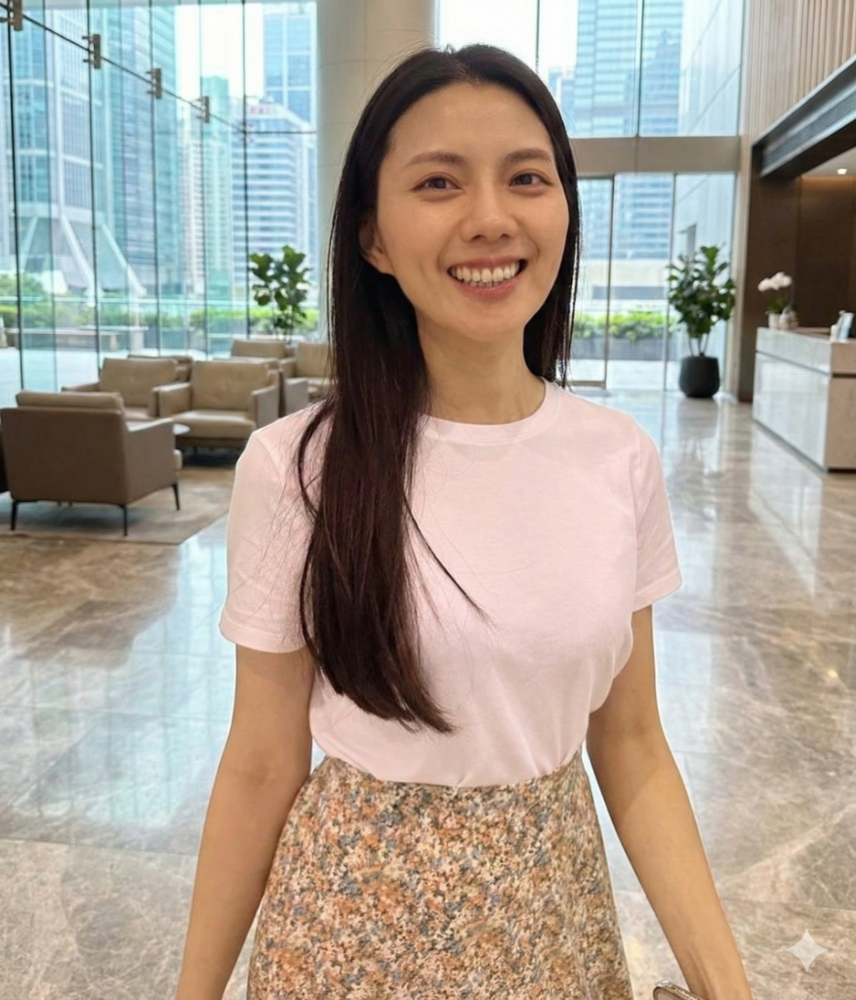
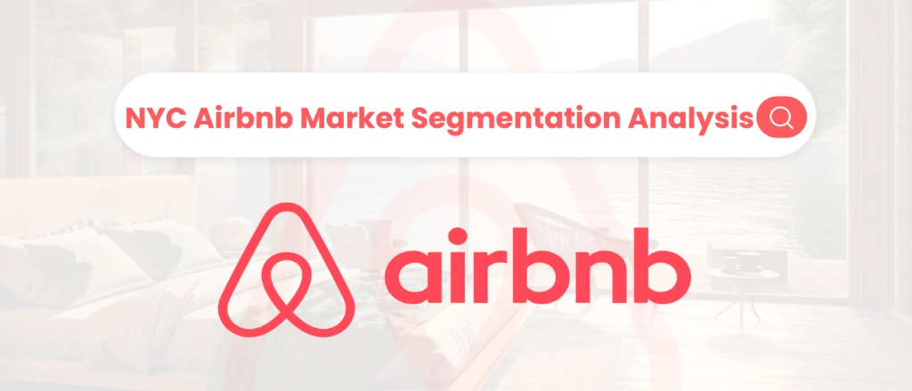
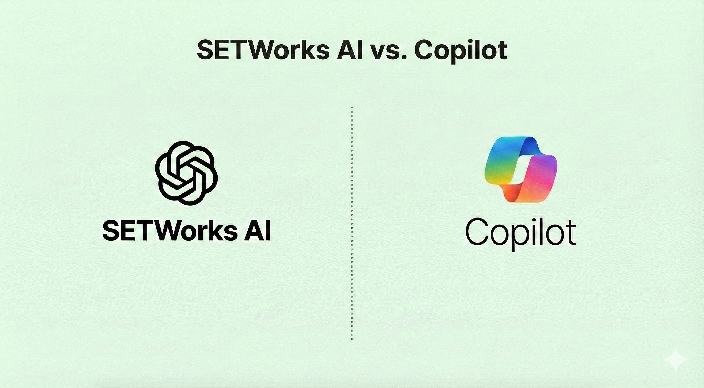
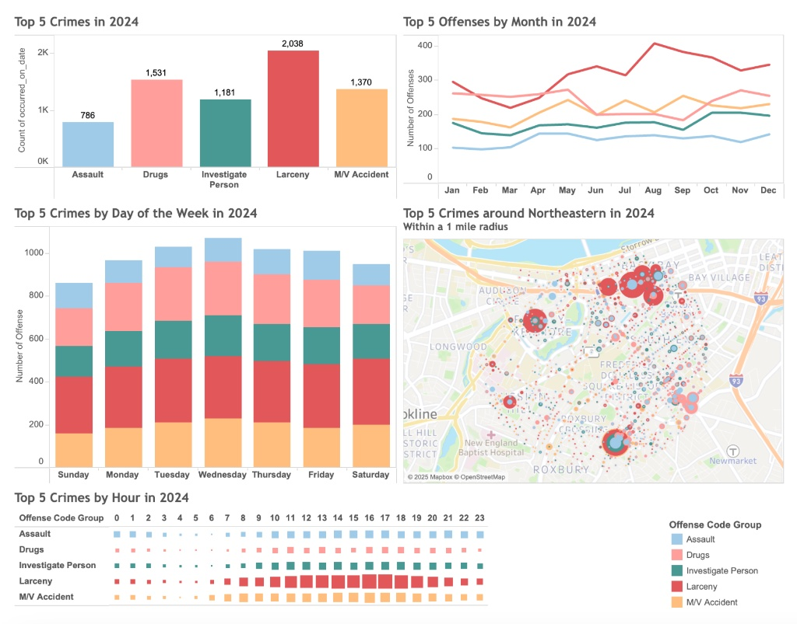
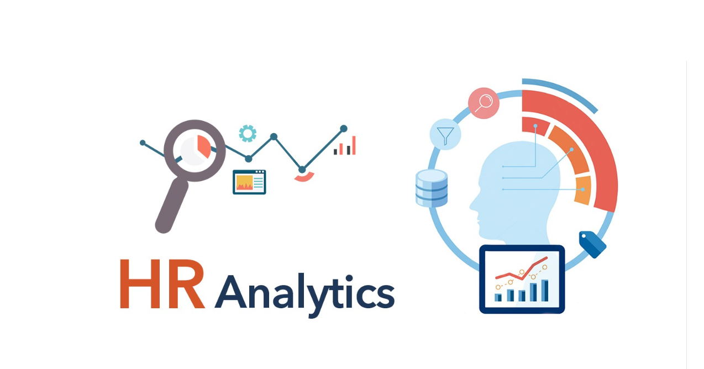

From spreadsheets to strategy—I help HR teams understand what their data is actually telling them. Currently bridging 5 years of operations experience with advanced analytics skills

I am a data-driven professional focused on Operations and People Analytics, with a background in
operations and analytical work. I specialize in using data analysis and process improvement to help
organizations make better decisions across both people and operational workflows.
I enjoy working with cross-functional teams to understand real business and workforce challenges,
and to translate complex data into clear, actionable insights. Through hands-on projects in
operations analysis, reporting, and data visualization, I have developed a strong ability to connect
data with operational efficiency, resources allocation, and measurable business impact.
Through prior roles closely tied to HR and operations, I have built extensive experience in process
optimization, cross-functional project execution, budget planning, and system implementation. These
roles required balancing multiple stakeholders, operational constraints, and execution timelines,
giving me a practical understanding of how organizations function day to day. This foundation allows
me to operate effectively in Operations Analyst and People Analyst roles, where understanding both
workflows and human factors is critical to driving sustainable improvement.
I am continuously strengthening my analytical and operational skill set, with the goal of supporting
smarter, data-informed decisions in dynamic, fast-paced environments.
Data Analytics · AI Strategy · Business & People Analytics · Geospatial Visualization

Analyzed NYC Airbnb data using K-Means clustering and SVM to better understand host segments. The results showed that differences between hosts were driven more by operational choices—such as minimum stay policies and review frequency—than by price or location, leading to three clear host groups with different investment implications.
View Full Report
Worked with a nonprofit organization to assess and introduce AI tools, including SETWorks AI and Microsoft Copilot. Through staff interviews and workflow reviews, I helped design a practical training and rollout plan that is expected to reduce administrative work by about 60%, allowing teams to spend more time supporting employers and job seekers through training, placement, and ongoing employment services.
View Consultant Report
Built an interactive Tableau dashboard to analyze crime patterns within a one-mile radius of Northeastern University, focusing on the most common crime types, seasonal trends, and high-risk time periods. The analysis showed that larceny accounted for over 41% of incidents, with clear peaks during student move-in months (August–September) and higher crime frequency on Tuesdays between 4–6 PM. These insights helped translate raw crime data into practical guidance for campus safety planning and resource allocation.
View Dashboard
Analyzed 311 employee records to explore workforce composition, employee status, compensation, separation reasons, and hiring trends. The analysis identified patterns across departments, employee groups, salary, and separation data, and helped define questions for further HR analysis.
View Analysis ReportFeel free to reach out via email or LinkedIn to discuss full-time opportunities in Operations, People Analytics, or data-driven roles
ko.anc@northeastern.edu